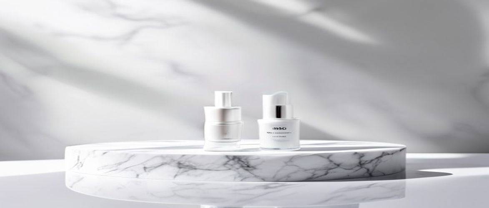

Are you searching for a powerful, hydrating serum to transform your complexion? Many skincare enthusiasts and professionals often ask, "is clinical hydra cool serum" the right choice for their skin concerns.
This medical-grade serum from iS Clinical is renowned for its ability to soothe, hydrate, and protect, making it a staple in many professional skincare routines. Understanding its unique formulation and how it addresses various skin needs is crucial for making an informed decision.
The iS Clinical Hydra-Cool Serum is a sophisticated clinical formula designed to deliver intense hydration and antioxidant protection. It's an essential component for maintaining a healthy skin barrier, especially for those dealing with environmental stressors.
This dermatologist-tested product stands out due to its multi-faceted approach to skin health, offering more than just simple moisture. Its unique blend of ingredients works synergistically to improve overall skin texture and resilience.
The iS Clinical Hydra-Cool Serum is particularly beneficial for individuals with dry, dehydrated, or hypersensitive skin. It also serves as an excellent calming agent for post-procedure skin, such as after laser treatments or peels.
Its non-comedogenic nature ensures that even those with oily or acne-prone skin can enjoy its hydrating and soothing benefits without exacerbating breakouts. This versatile product is a great addition to almost any professional skincare routine.
Understanding the science behind the iS Clinical Hydra-Cool Serum reveals why it's such an effective medical-grade skincare solution. Each ingredient plays a vital role in delivering its promised benefits, from deep hydration to soothing relief.
The careful selection of these components ensures a clinical formula that is both potent and gentle, making it suitable for even the most delicate skin types and contributing to improved skin texture.
| Ingredient / Feature | Skin Benefit |
|---|---|
| Hyaluronic Acid (Botanically Derived) | Attracts and binds up to 1,000 times its weight in water, providing intense and lasting hydration to the skin. |
| Pantothenic Acid (Vitamin B5) | Supports the skin barrier function, promotes healing, and enhances skin elasticity and softness. |
| Asiaticoside, Asiatic Acid, Madecassic Acid (Centella Asiatica) | Potent antioxidants that calm inflammation, stimulate collagen production, and aid in wound healing. |
| Menthol (Botanically Derived) | Provides a refreshing and cooling sensation, helping to soothe and calm irritated skin. |
Hyaluronic acid is a powerful humectant, meaning it draws moisture from the environment into your skin. This botanical version ensures deep, lasting hydration without any animal-derived components, making it an excellent choice for sensitive individuals.
By effectively plumping the skin with moisture, it helps to diminish the appearance of fine lines and wrinkles, contributing to a smoother, more youthful complexion. It is a cornerstone for maintaining optimal skin barrier health.
Studies consistently show that hyaluronic acid can hold up to 1,000 times its weight in water, making it one of the most effective hydrating ingredients in medical-grade skincare.
Vitamin B5, or Pantothenic Acid, is crucial for skin repair and regeneration. It helps to strengthen the skin barrier, reducing transepidermal water loss and promoting a healthier, more resilient complexion.
This ingredient also possesses anti-inflammatory properties, which can help to soothe redness and irritation, making it particularly beneficial for hypersensitive skin. It aids in improving skin texture and overall softness.
To maximize the benefits of the iS Clinical Hydra-Cool Serum, proper application is key. Integrating it correctly into your daily professional skincare routine will ensure optimal hydration and soothing effects.
Consistency is paramount when using any medical-grade skincare product, so make sure to follow these steps diligently for the best possible outcomes for your skin texture and overall health.
One common mistake is applying the serum to completely dry skin, which can hinder absorption and effectiveness. Always apply to slightly damp skin for better penetration and hydration.
Another error is using too much product; while it feels good, excessive amounts don't necessarily provide more benefits and can lead to unnecessary product wastage. Stick to the recommended 3-5 drops.
Always perform a patch test on a small, inconspicuous area of your skin before full facial application, especially if you have hypersensitive skin or are introducing a new medical-grade skincare product.
When considering whether to incorporate the iS Clinical Hydra-Cool Serum into your regimen, it's helpful to weigh its advantages against any potential drawbacks. This balanced perspective helps you decide if it aligns with your skin's needs and your expectations for a clinical formula.
Understanding both the strengths and weaknesses of this dermatologist-tested product can guide you toward a more informed choice for improving your skin barrier and overall skin texture.
Many individuals have questions about integrating advanced skincare products like the iS Clinical Hydra-Cool Serum into their daily routines. Here are some common inquiries to help clarify its use and benefits.
Yes, the iS Clinical Hydra-Cool Serum is highly suitable for acne-prone skin. Its non-comedogenic formula means it won't clog pores, and its soothing ingredients can help calm inflammation often associated with breakouts, making it a gentle yet effective hydrator.
Absolutely, the serum contains soothing ingredients like Centella Asiatica and menthol, which are known for their anti-inflammatory properties. These components work together to visibly reduce redness and calm irritated skin, offering relief for sensitive or reactive complexions.
For optimal results, you should use the iS Clinical Hydra-Cool Serum twice daily, in both your morning and evening skincare routines. Consistent application ensures continuous hydration and protection, helping to maintain a healthy skin barrier and improve skin texture over time.
Yes, you can effectively layer other serums with iS Clinical Hydra-Cool Serum. It typically works well as a first layer after cleansing and toning, followed by other treatment serums like vitamin C or